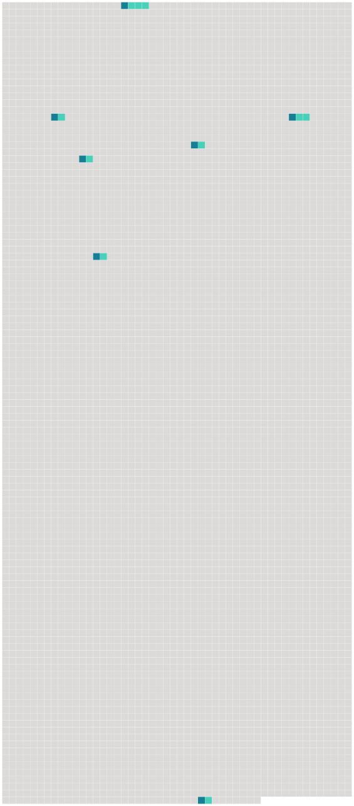

Longueur nb maillons : 7 mentions |
|
» [27 phrases]
»
Mais, au départ, on avait négligé certaines formalités, et, la fièvre jaune sévissant à New-York, l'équipage et les passagers [du brick américain] allaient être traités comme des pestiférés. [4 phrases] Dans la matinée, on nous apprit qu'un bateau se trouvait par le travers de [notre navire] ; je volai sur le pont, et aussitôt apercevant le cher Carleton, venu à notre rencontre, j'allais me précipiter dans ses bras, quand un garde que je remarquai pour la première fois, s'écria : N'approchez pas!! [1 phrases] « [Le navire] dut aller en rade, et mon pauvre William se préparer à entrer au lazaret, malade comme il était. [23 phrases] Nos sirops, nos gelées, nos potions qu'il fallait lui donner d'heure en heure, à bord [du vaisseau] , où sont -elles?? [171 phrases] « Nous avons eu la visite du second de [notre vaisseau] , envoyé par le capitaine O'Brien. |
 |
Il est possible de télécharger la ressource sur la page Ortolang |
Si vous avez des questions ou vous voyez des erreurs, merci d'envoyer un mail à silvia.federzoni89@gmail.com |